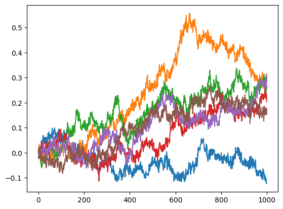
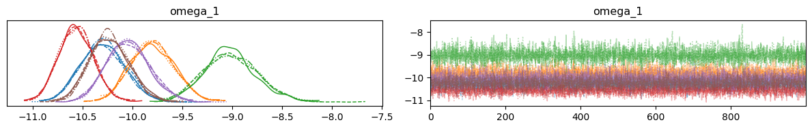

Parameters recovery, prior predictive and posterior predictive sampling#
%%capture
import sys
if 'google.colab' in sys.modules:
! pip install pyhgf
from numpy import loadtxt
import numpy as np
from pyhgf.distribution import hgf_logp, HGFDistribution
from pyhgf import load_data
from pyhgf.response import total_binary_surprise
import jax.numpy as jnp
import numpy as np
import pymc as pm
import arviz as az
import matplotlib.pyplot as plt
np.random.seed(123)
In this tutorial, we are going to demonstrate some forms of parameters recovery, prior predictive and posterior predictive sampling that can be a way to assess the strength of the model fitting.
Continuous HGF#
Simulate a dataset#
n_data = 6
dataset = []
for participant in range(n_data):
input_data = []
kappa_1 = 1.0
omega_1 = -10.0
omega_2 = -10.0
mu_1 = 0.0
mu_2 = 0.0
pi_1 = 1e4
pi_2 = 1e1
# two-level hierarchical gaussian random walk
for i in range(1000):
# x2
pi_2 = np.exp(omega_2)
mu_2 = np.random.normal(mu_2, pi_2**.5)
# x1
pi_1 = np.exp(kappa_1 * mu_2 + omega_1)
mu_1 = np.random.normal(mu_1, pi_1**.5)
# input node
u = np.random.normal(mu_1, 1e-4**.5)
input_data.append(u)
dataset.append(input_data)
for rw in dataset:
plt.plot(rw)

Embedding a serie of HGFs in a graphical model#
Here, we are goingin to estimate the parameter \(omega_{1}\) from the time series created by the hierarchical random walks. All the time series were generated using \(omega_{1} = -10.0\) and we want to see how the Bayesian inference can retrieve these values.
hgf_logp_op = HGFDistribution(
n_levels=2,
model_type="continuous",
input_data=dataset,
)
with pm.Model() as model:
# Priors
#-------
omega_1 = pm.Normal("omega_1", mu=0.0, sigma=2.0, shape=n_data)
pm.Potential(
"hgf_loglike",
hgf_logp_op(
omega_1=omega_1,
omega_2=-10.0,
omega_input=np.log(1e-4),
rho_1=0.0,
rho_2=0.0,
pi_1=1e4,
pi_2=1e1,
mu_1=0.0,
mu_2=0.0,
kappa_1=1.0,
omega_3=jnp.nan,
rho_3=jnp.nan,
pi_3=jnp.nan,
mu_3=jnp.nan,
kappa_2=jnp.nan
),
)
pm.model_to_graphviz(model)

with model:
idata = pm.sample(chains=4, cores=4, tune=1000)
Auto-assigning NUTS sampler...
Initializing NUTS using jitter+adapt_diag...
No GPU/TPU found, falling back to CPU. (Set TF_CPP_MIN_LOG_LEVEL=0 and rerun for more info.)
Multiprocess sampling (4 chains in 4 jobs)
NUTS: [omega_1]
100.00% [8000/8000 01:06<00:00 Sampling 4 chains, 0 divergences]
Sampling 4 chains for 1_000 tune and 1_000 draw iterations (4_000 + 4_000 draws total) took 67 seconds.
Chain <xarray.DataArray 'chain' ()>
array(0)
Coordinates:
chain int64 0 reached the maximum tree depth. Increase `max_treedepth`, increase `target_accept` or reparameterize.
Chain <xarray.DataArray 'chain' ()>
array(1)
Coordinates:
chain int64 1 reached the maximum tree depth. Increase `max_treedepth`, increase `target_accept` or reparameterize.
Chain <xarray.DataArray 'chain' ()>
array(2)
Coordinates:
chain int64 2 reached the maximum tree depth. Increase `max_treedepth`, increase `target_accept` or reparameterize.
Chain <xarray.DataArray 'chain' ()>
array(3)
Coordinates:
chain int64 3 reached the maximum tree depth. Increase `max_treedepth`, increase `target_accept` or reparameterize.
az.plot_trace(idata);
plt.tight_layout()

az.summary(idata)
| mean | sd | hdi_3% | hdi_97% | mcse_mean | mcse_sd | ess_bulk | ess_tail | r_hat | |
|---|---|---|---|---|---|---|---|---|---|
| omega_1[0] | -10.295 | 0.220 | -10.706 | -9.895 | 0.003 | 0.002 | 5504.0 | 2967.0 | 1.0 |
| omega_1[1] | -9.797 | 0.218 | -10.172 | -9.368 | 0.003 | 0.002 | 5242.0 | 3426.0 | 1.0 |
| omega_1[2] | -9.014 | 0.270 | -9.503 | -8.483 | 0.004 | 0.003 | 5821.0 | 3490.0 | 1.0 |
| omega_1[3] | -10.565 | 0.173 | -10.878 | -10.237 | 0.002 | 0.002 | 5852.0 | 2994.0 | 1.0 |
| omega_1[4] | -10.043 | 0.214 | -10.425 | -9.633 | 0.003 | 0.002 | 4838.0 | 3341.0 | 1.0 |
| omega_1[5] | -10.232 | 0.198 | -10.593 | -9.867 | 0.003 | 0.002 | 6203.0 | 3455.0 | 1.0 |